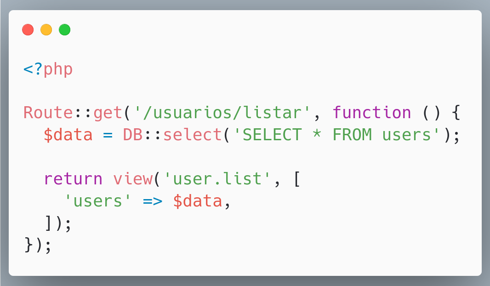

Não deixe o framework atrasar suas entregas
Atrase-as você mesmo
Quem sou eu?
Alessandro Feitoza
- Professor de códigos e outras computarias
- Programador/Dev/Severino
- PHP com Rapadura
- PHPeste

Agenda
- Parte 1
- Parte 2
- Parte 3
- Parte 4
@alessandro_feitoza
Essa talk não é um mandamento
- Não estou negativando o uso de frameworks
- É uma visão minha baseada na XP que eu acho que tenho
- E somada a interpretação literária e das ruas
Por que isso é importante?
A nova geração de devs quer aprender primeiro o framework antes da linguagem
Quais frameworks vocês conhecem/usam?

E o que diabé um framework?
E uma Biblioteca/Library?
Biblioteca/Library
- Conjunto de códigos prontos com alguma(s) funcionalidade(s)
- É adicionada a aplicação para resolver um problema especifico
Framework
- Conjunto de códigos prontos com alguma(s) funcionalidade(s)
- Está na base da aplicação
- É decidido antes do projeto começar
Library VS Framework
A diferença está na
Inversão de Controle
Ao usar uma library:
Você está no controle no fluxo da aplicação.
Ao usar um framework:
Agora o seu código roda dentro da estrutura fornecida pelo framework.
Laravel:

Laravel:

React (criando uma aplicação nova):

No mundo real o framework usar seu código para executar bibliotecas

Geramos então o Acoplamento

- Há quantos anos você faz código?
- Já precisou decidir qual framework ou biblioteca usar?
- Já cogitou começar um projeto do zero por causa da decisão de alguém?
Pontos Positivos de usar um framework

- Ecossistema Coeso
- Já tem o óbvio (Rotas, conexão, etc)
- Estrutura de arquivos e diretórios padronizada
- Objetivo
- Seguro**
- Validado pela comunidade*
Pontos Negativos de usar um framework
- Muito código (nem sempre precisamos)
- "Díficil" integração com um projeto legado
- Pouca flexibilidade

A tal da Alta Coesão e Baixo Acoplamento
Cuidado com o Lobisomen
Aquilo que a gente conhece e confia pode se tornar nosso pior pesadelo
05 passos
para o sucesso
01 - Antes de sair comparando frameworks
- Domine a linguagem, Aprenda o PHP/JS de verdade, puro, das ruas
- Aprenda paradigmas, Orientação a Objetos, Funcional, Estruturado e como os artefatos se relacionam
- Domine a linguagem, Entenda o funcionamento de pacotes (Composer/NPM/PIP)
- Estude arquiteturas: (Monolitico, Microservices, serverless) e design de código
02 - Antes de escolher um framework
- Instale e teste vários outros, teste, crie protótipos (não só CRUDs)
- A documentação deve se abrir com você Se ela for misteriosa, fuja!
- Veja o engajamento da comunidade: (issues, PRs, discussion)
03 - Antes de se decidir
- Olhe o reclame aqui (Stackoverflow)
- Perguntar para quem já usa (equipe, comunidades)
- Veja o número de downloads/forks (packagist/git)
- Procure conteúdo (Palestras, eventos, tutoriais, videos)
04 - Depois de decidir
- Monte a sua stack (não precisa usar tudo que o framework oferece
- Aprenda SQL (nem só de ORM viverá o dev)
- Cuidado com as coisas automágicas
- Não queime na largada (o que é "ágil" no ínicio pode se tornar custoso durante o processo, e inviável no fim)
05 - Pronto, e agora?
- Documente sua experiência
- Não se prenda demais ao framework (veja maneiras de isolar suas regras)
- Adapte-se (entenda o framework e reescreva as regras)
- Sugira melhorias, reporte bugs, contribua com o projeto
- Multiplique conhecimento
E é isso
DÚVIDAS?
Referências
@alessandro_feitoza
https://linkedin.com/in/AlessandroFeitoza
https://alessandrofeitoza.github.io/slides